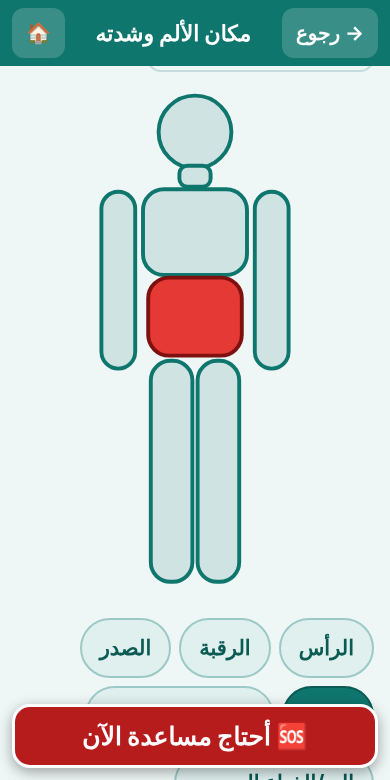
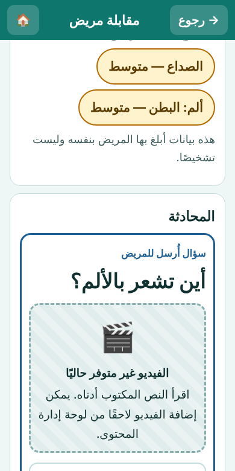
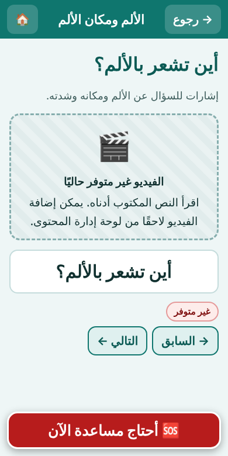
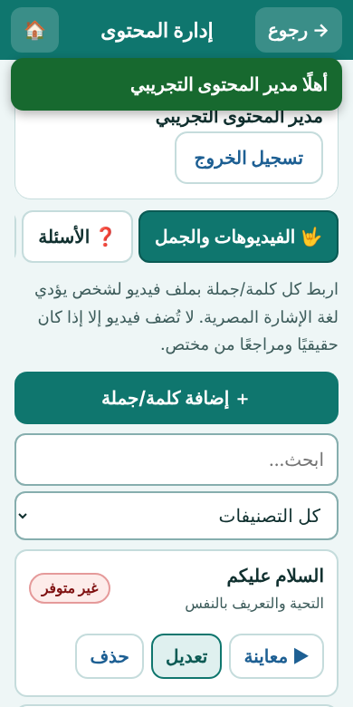

المميزات
ثلاثة أدوار في التطبيق: المريض، والطبيب أو الممرض، ومدير المحتوى. لكل دور شاشاته.
🙋 للمريض
- اختيار الأعراض بالصور: الصداع، ألم البطن، ألم الصدر، الدوخة، الحرارة، الغثيان، الحساسية، صعوبة التنفس، والألم في أماكن أخرى.
- تحديد الشدة: خفيف، متوسط، شديد.
- تحديد مكان الألم على صورة الجسم.
- الإجابة على أسئلة الطبيب بالضغط: نعم، لا، لا أعرف، أو اختيارات.
- كتابة رسالة للطبيب مع جمل سريعة جاهزة.
- مشاهدة السؤال مكتوبًا، ومعه فيديو الإشارة إن توفر.
- تنبيه «اطلب المساعدة فورًا» عند اختيار صعوبة التنفس أو ألم الصدر الشديد.
- لا يطلب الاسم الحقيقي ولا رقم الهاتف.

👨⚕️ للطبيب والممرض
- تسجيل دخول آمن قبل الوصول لأي بيانات مريض.
- فتح المقابلة برمز من 4 أرقام يظهر على هاتف المريض.
- قراءة الأعراض التي اختارها المريض، بعد موافقته فقط.
- أكثر من 20 سؤالًا طبيًا جاهزًا مرتبة حسب الموضوع مع بحث.
- كتابة سؤال جديد بخط كبير، واختيار نوع الإجابة.
- تنبيه مرئي وامض واهتزاز عند طلب المريض المساعدة، دون الاعتماد على الصوت.
- تسجيل خروج تلقائي بعد 15 دقيقة دون نشاط.

🤟 مكتبة لغة الإشارة
8 موضوعات و49 كلمة وجملة: التحية والتعريف، الألم ومكانه، الصداع والدوخة والحرارة، الحساسية من الأدوية، الأدوية وطريقة استخدامها، الأسئلة الشائعة، الموافقة والرفض وطلب المساعدة، والطوارئ.
- مشغّل بأزرار كبيرة: تشغيل، إيقاف، إعادة، وعرض أبطأ.
- الجملة العربية مكتوبة أسفل الفيديو دائمًا.
- حفظ الفيديو على الهاتف للمشاهدة دون إنترنت.
- إذا لم يتوفر الفيديو تظهر رسالة صريحة بذلك. لا نعرض صورًا أو حركات مولّدة على أنها لغة إشارة.

⚙️ لوحة إدارة المحتوى
- إضافة وتعديل الكلمات والجمل وفيديوهاتها.
- إضافة الأسئلة الطبية وربط كل سؤال بفيديو.
- إدارة الأعراض وصورها وأيقوناتها.
- إدارة التصنيفات.
- حالة كل فيديو واضحة: متوفر أو غير متوفر.
- تصدير المحتوى واستيراده كملف.
